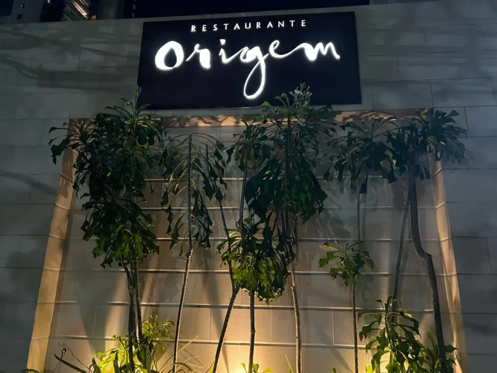
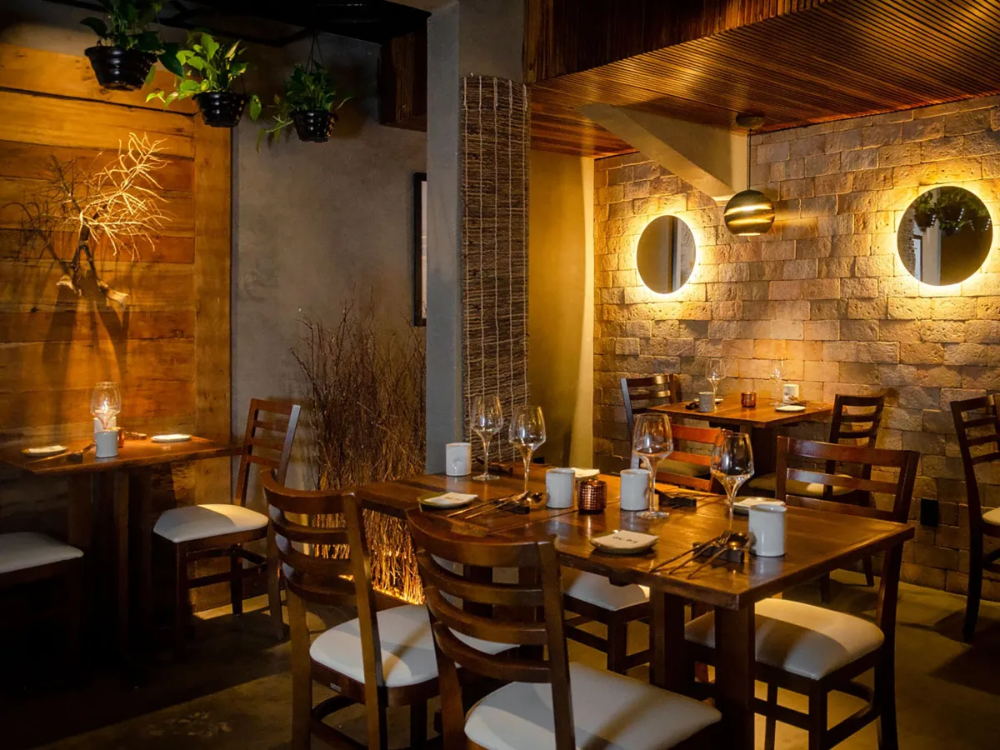
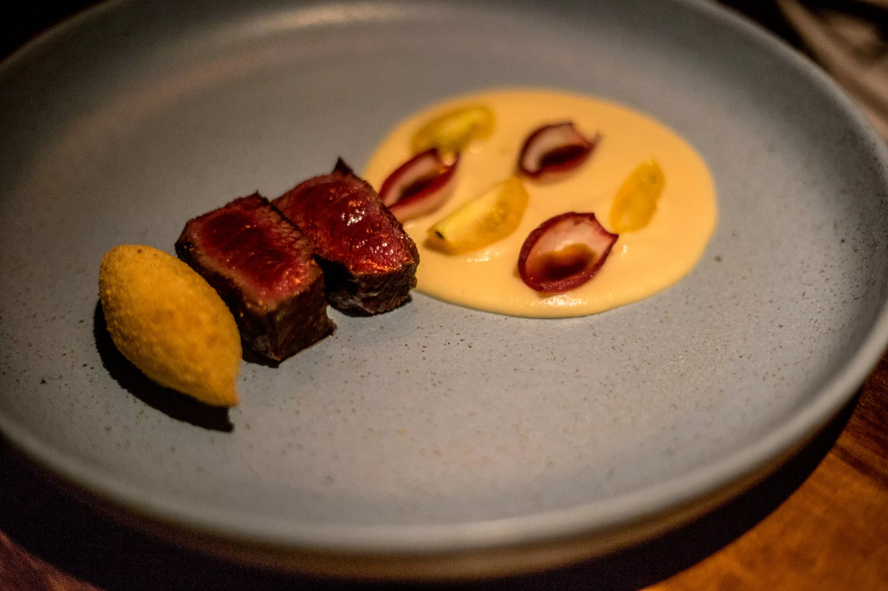
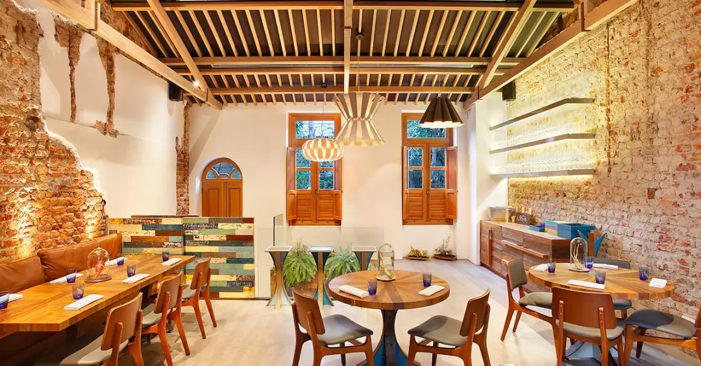
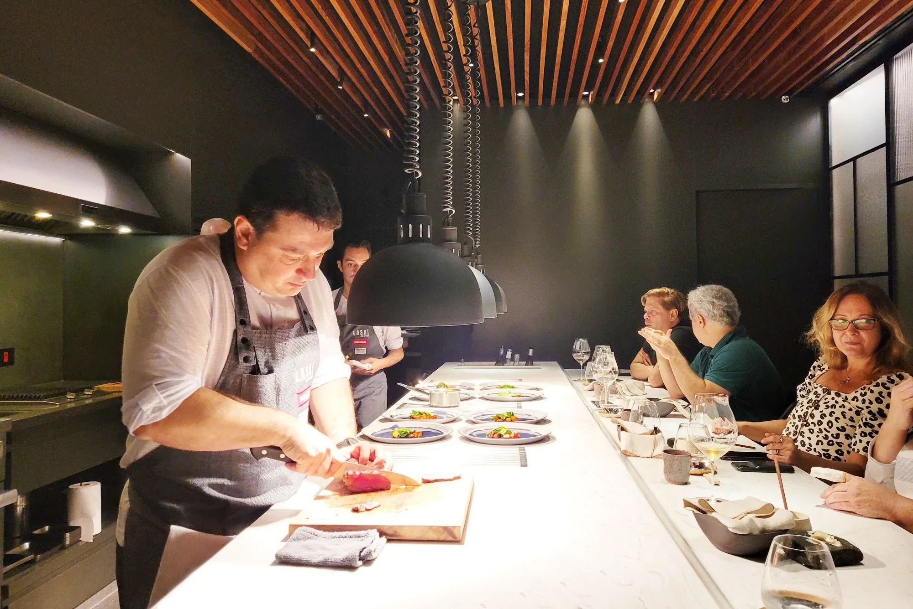
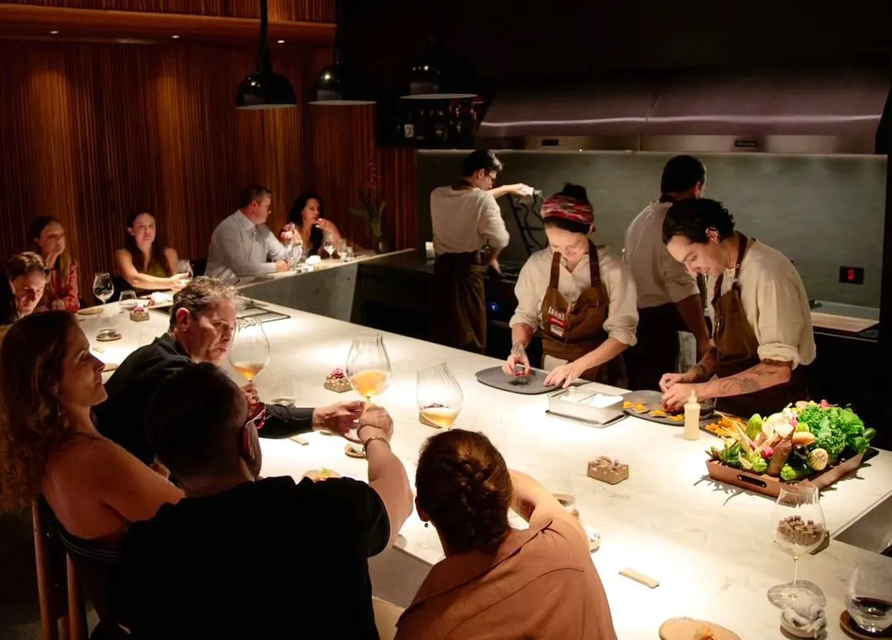
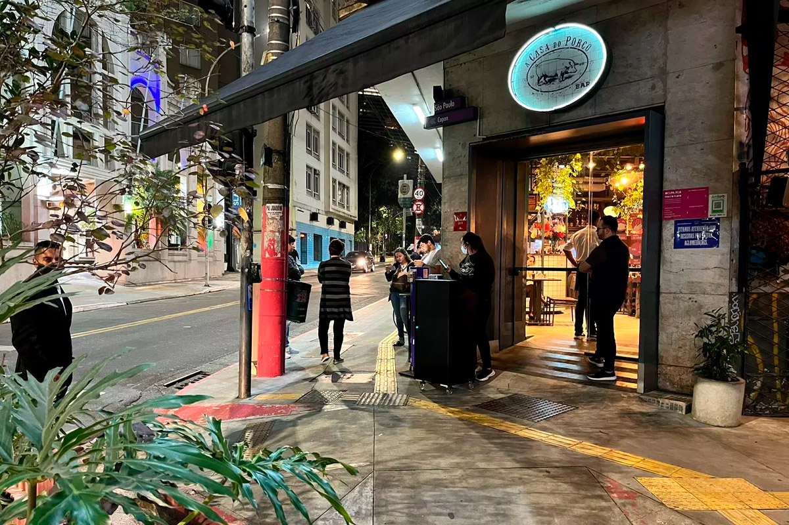
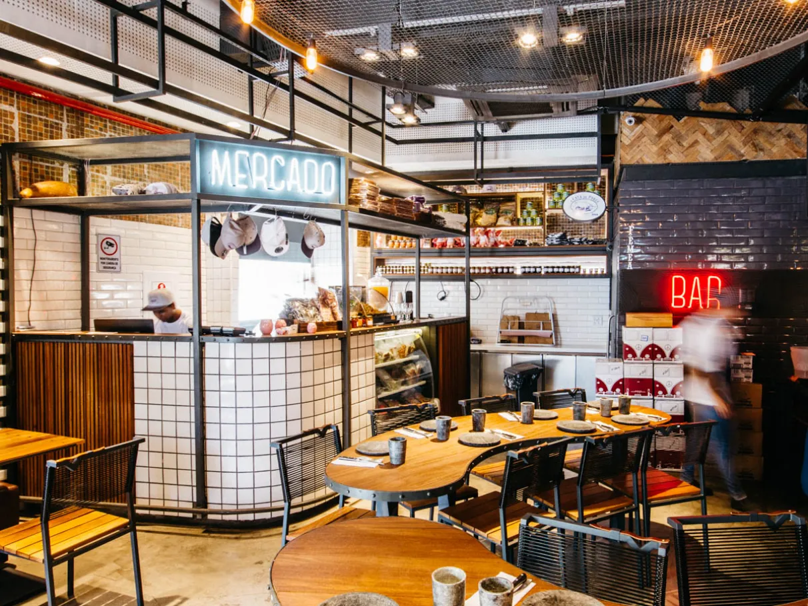
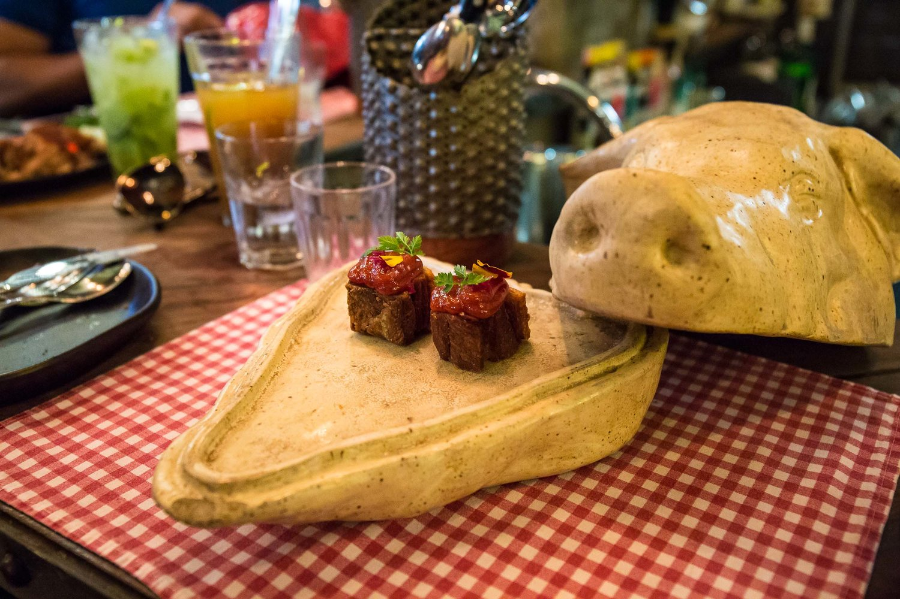

1. Origem – Salvador, BA



Sobre
O Origem, em Salvador, é conhecido por reinventar a culinária baiana com ingredientes locais e técnicas modernas. Premiado como o melhor restaurante do Brasil, sua cozinha autoral conquista pelo sabor e apresentação impecável.
2. Lasai – Rio de Janeiro, RJ



Sobre
O Lasai, no Rio, aposta em ingredientes sazonais e orgânicos cultivados em sua própria horta. O ambiente intimista e a proposta sustentável conquistam paladares exigentes e fazem do restaurante uma referência na gastronomia brasileira.
3. A Casa do Porco – São Paulo, SP



Sobre
Comandado por Janaína Torres, A Casa do Porco celebra a carne suína com pratos criativos e respeitosos ao ingrediente. Localizada no centro de São Paulo, é reconhecida mundialmente por sua cozinha autêntica e democrática.